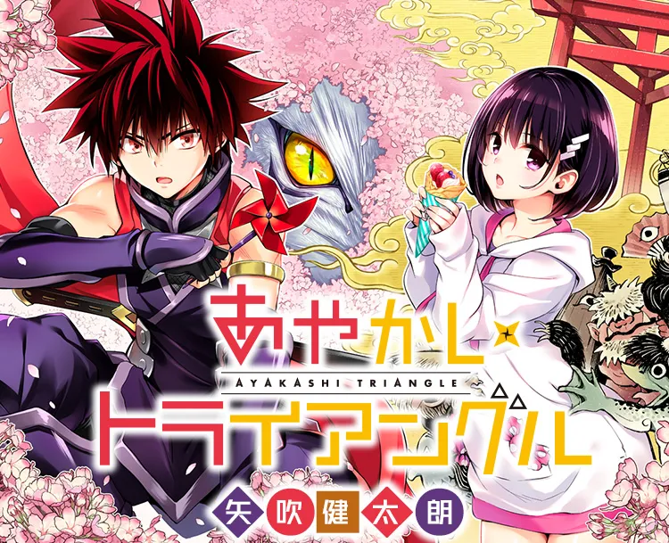

This is a page made to spread awareness for Yabuki Kentaro's manga Ayakashi Triangle.
Something Somthing header
This is Yabuki Kentaro's latest work, making its debut on June 2020. His past work include Black Cat (2000-2004), To Love Ru (2006-2017), and adapting both Mayoi Neko Overrun! (2010) and Darling in the Franxx (2018-2020) into manga form. As a long time fan of Yabuki Kentaro's work, I find it exciting to see his latest creation and would like to share its existence and generate discussion.
The main character Matsuri Kazamaki is devoted to protecting his childhood friend Suzu Kanade from evil ayakashis that want to devour her. Ayakashis are supernatural apparitions unique to Japanese culture. Examples would be like Tengus and Kappas. Ayakashi is a more archaic term, and can be used interchangeably with the more modern term, "Yokai". Small tangent aside, the reason why ayakashis are focused on Suzu Kanade is because she is an ayakashi medium, and by devouring her, the ayakashi would be able to gain an exponential increase in power.
Quote: "Never forget ... that in this era there was an ever-scolding, straight-man cat that wouldn't excuse any shamelessness happening around him." -Ayakashi Triangle ch82
Sample Images
Did I pique your interest? You can read the official translation on Viz by clicking on this link